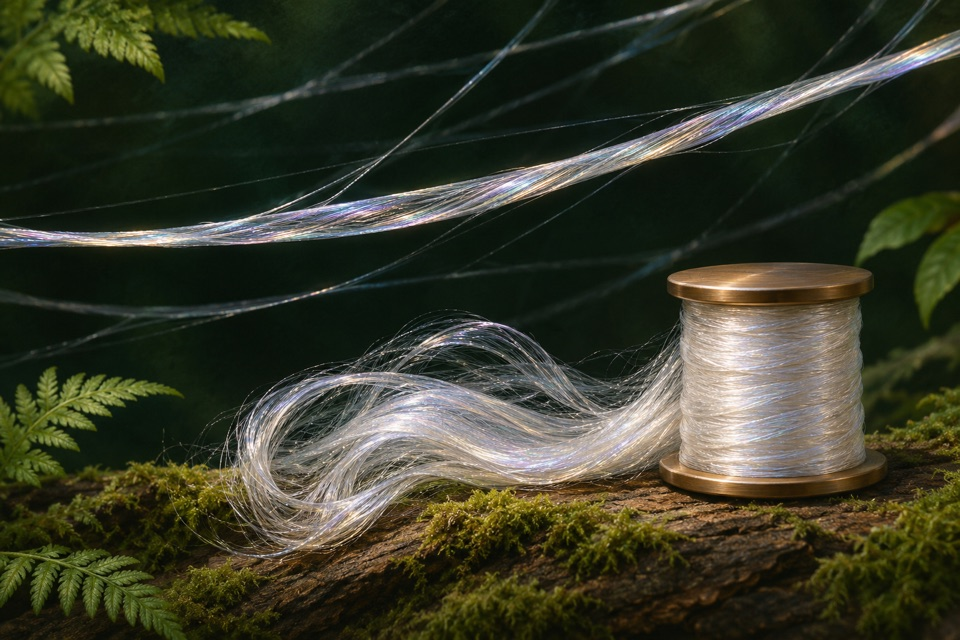

Selection 01 · B001
Spider-silk protein production
Araneus diadematus and Nephila clavipes (named in the native and related records)
Selected primary text checked with a documented recipient assay. A numerical result is recorded. 3 distinct primary references. Multiple evidence scopes are documented. Assay controls are recorded.
Evidence record